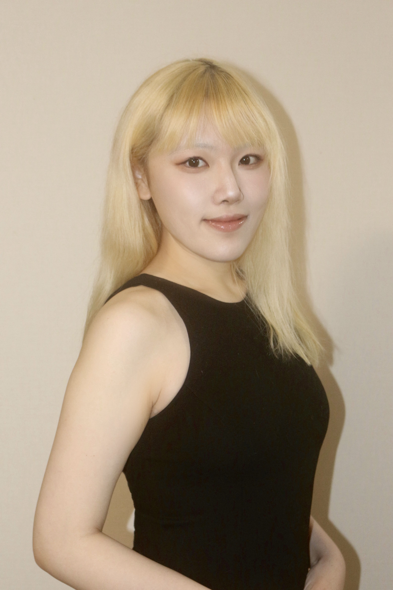

洪櫻菲（こう・おうひ）は東京を拠点とするピアニストであり、現在東京音楽大学大学院鍵盤楽器研究領域ピアノ修士課程に在籍している。現代アメリカ音楽および女性作曲家の作品を中心に、演奏実践を通じた研究活動を行う。
サロンコンサートやレクチャーコンサートを企画・出演し、現代作品の普及と発信に積極的に取り組んでいる。
洪櫻菲，东京音乐大学大学院键盘乐器研究领域钢琴演奏硕士课程在籍，研究方向为当代美国音乐及女性作曲家作品。
积极策划并参与沙龙音乐会、讲座型音乐会，致力于当代音乐的推广与传播，并与作曲家进行合作演出。
Evelyn Hong is a pianist based in Tokyo, currently pursuing a master's degree in piano performance at Tokyo College of Music. Her work focuses on contemporary American music and works by female composers, explored through performance-based research.
She actively promotes contemporary repertoire through salon concerts and lecture-recitals, and collaborates with composers as a performer and interpreter.
7歳よりピアノおよびチェロを始める。廈門市音楽学校鼓浪嶼キャンパスのピアノ専攻に首席で入学し、方妮、寿梅、楊明嶺の各氏に師事。2021年、上海音楽学院オルガン専攻および浙江音楽学院ピアノ科に合格し、その後来日。それ以前には、中央音楽学院鼓浪嶼ピアノ学校、上海音楽学院および浙江音楽学院にて、江夏、周温玉、陳功、呉曉、北村香織の各氏に師事。
その後、昭和音楽大学ピアノ演奏家コースに進学し、江口文子、大森ひろみの各氏に師事。在学中、外国人留学生奨学生として在籍し、成績優秀者としてマスタークラスに選抜され、コンチェルト演奏会に出演。現在、東京音楽大学大学院鍵盤楽器研究領域ピアノ演奏修士課程に在籍し、大竹紀子、中野翔太の各氏に師事。公開マスタークラスの受講生に推薦され、財団奨学生に採用される。
現在、ソリスト、伴奏ピアニスト、現代音楽奏者および通訳者として活動し、現代音楽の演奏と普及に力を注ぐとともに、コンサートやレクチャーコンサートの企画にも積極的に取り組んでいる。
7岁起学习钢琴与大提琴。以专业第一名考入厦门市音乐学校鼓浪屿校区钢琴专业，师从方妮、寿梅、杨明岭老师。2021年合格上海音乐学院管风琴专业及浙江音乐学院钢琴系，随后赴日。此前曾师从中央音乐学院鼓浪屿钢琴学校、上海音乐学院及浙江音乐学院的江夏、周温玉、陈功、吴晓、北村香织等教授。
后进入昭和音乐大学钢琴演奏家课程学习，师从江口文子、大森Hiromi。在校期间获外国留学生奖学生身份，并作为成绩优秀者入选大师班、参加协奏曲音乐会。现就读于东京音乐大学大学院键盘乐器研究领域钢琴演奏硕士课程，师从大竹纪子、中野翔太，获推荐参加公开大师班，并获财团奖学金。
目前以独奏演奏家、合作钢琴家、现代音乐演奏者及翻译的身份开展活动，专注于现代音乐的演奏与传播，并积极策划音乐会及讲座型音乐会。
She began studying piano and cello at the age of seven. She was admitted to the Piano Department of the Gulangyu Campus of Xiamen Music School, China, ranking first in the entrance examination, and studied with Fang Ni, Shou Mei, and Yang Mingling. In 2021, she was admitted to the Organ Department of Shanghai Conservatory of Music and the Piano Department of Zhejiang Conservatory of Music, before subsequently moving to Japan. Prior to that, she studied with Jiang Xia, Zhou Wenyu, Chen Gong, Wu Xiao, and Kaori Kitamura at the Gulangyu Piano School of the Central Conservatory of Music, Shanghai Conservatory of Music, and Zhejiang Conservatory of Music.
She subsequently studied in the Piano Performance Course at Showa University of Music under Fumiko Eguchi and Hiromi Omori. During her studies, she received a scholarship for international students, was selected for a masterclass in recognition of her academic achievements, and performed in a concerto concert. She is currently pursuing a master's degree in piano performance in the Graduate School of Tokyo College of Music, studying with Noriko Otake and Shota Nakano. She has been recommended to participate in a public masterclass and awarded a foundation scholarship.
She is currently active as a soloist, collaborative pianist, contemporary music performer, and translator. Her work focuses on the performance and promotion of contemporary music, and she is also actively involved in organizing concerts and lecture-recitals.